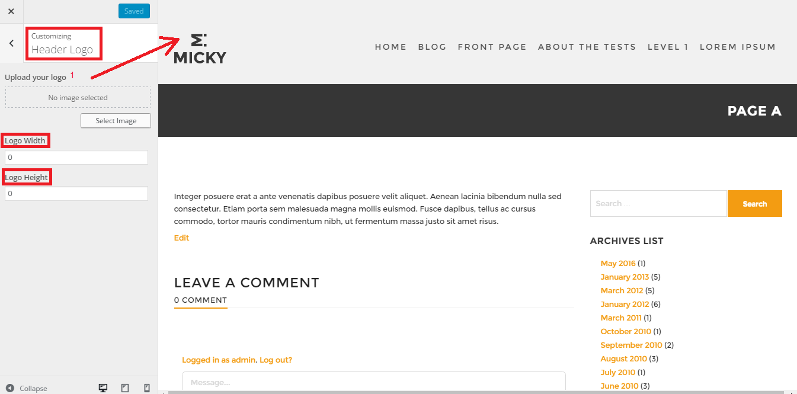
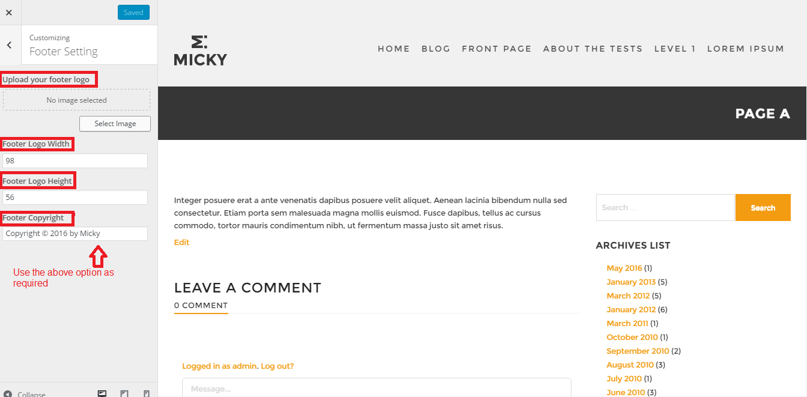
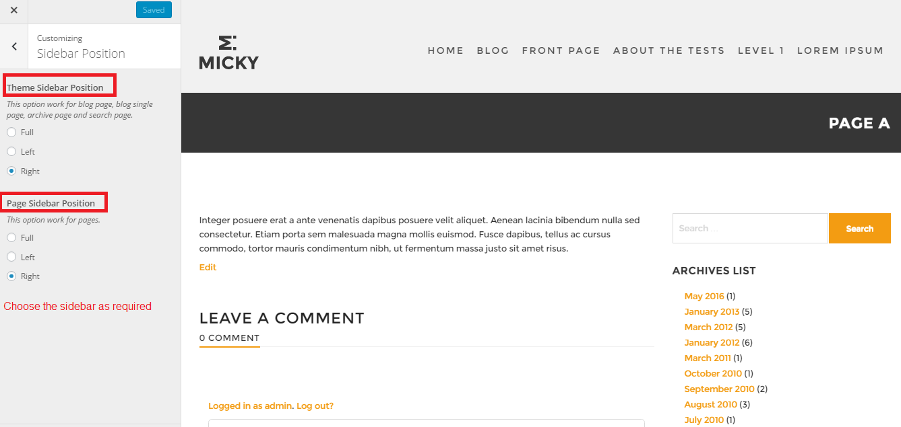
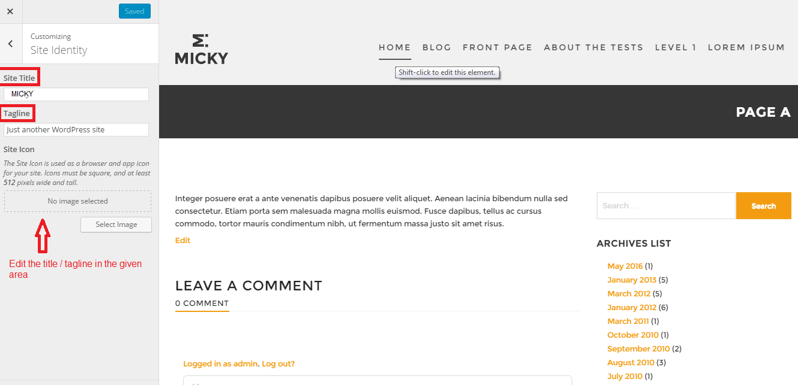
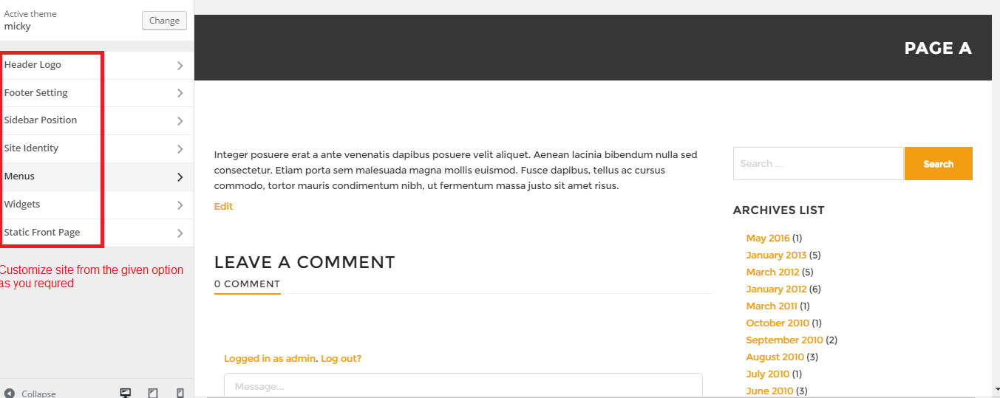
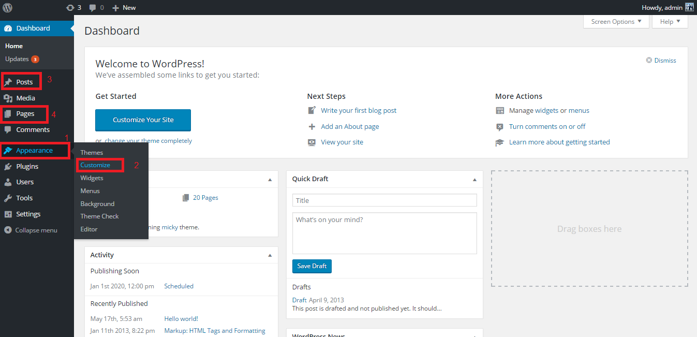

Micky - Wordpress Theme
We would like to thank you for purchasing Micky! We are very pleased that you have chosen Micky for your website, As the name itself defines it's nobility in all aspects.
Before you get started, please be sure to always search our Documentation and Knowledgebase.
Micky wordpress theme can be used with WordPress and we assume that you already have WordPress installed and ready to go.
If you do not, please follow this link to see our section on WordPress to help you get started.
Installation
You can install the theme in two ways: through WordPress, or via FTP. The Micky.zip file is the Installable WordPress Theme and what you need to use to get the theme installed. Please see the following sections for each method.
1) Installation via Wordpress
1) Installation via FTP: Prefer upload the un-zipped theme folder
WordPress Installation
How To Install Micky! via WordPress
Step 1 – Navigate to Appearance > Themes.
Step 2 – Click Add New and click the Upload button
Step 3 – Navigate to find the “Micky.zip” file on your computer and click “Install Now”
Step 4 – Once uploaded, activate the theme. Go to Appearance > Themes and activate it.
FTP Installation
How To Install Micky! via FTP
Step 1 – Log into your hosting space via an FTP software.
Step 2 – Unzip the Micky.zip file and ONLY use the extracted Micky theme folder.
Step 3 – Upload the extracted Micky theme folder into wp-content > themes folder.
Step 4 – Activate the newly installed theme by going to Appearance > Themes and clicking the Activate button.

Micky Customize Option
The various options provided are as follows :
01) Header Logo
02) Footer Logo
03) Sidebar Position
04) Site Identity
05) Menus
06) Widgets
07) Static Front page
01)Header Logo : Can upload the logo for the header section. .

02)Footer Logo : Can upload the logo for the footer section.

03)Sidebar Position - For pages , blog and archive page can choose the sidebar position as by given option.

04)Site Identity : Put the site title and the tag line here.

05)Menus /Widgets/ Static Front page - Use the option for the customize.

Page / Post
After completing all the Installation and Micky customize options data setup as mentioned earlier, all the pages & posts can be created. Now, you just need to set your default pages.
